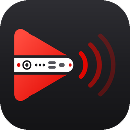

Apple TV için ücretsiz, reklamsız ve hesap gerektirmeyen medya oynatıcı.
Remotech IPTV hiçbir kişisel veri toplamaz, işlemez veya paylaşmaz.
Tüm verileri silmek için: Ayarlar › Gizlilik ve şartlar › Tüm verileri sil. Uygulamayı silmek de tüm verileri kaldırır.
Remotech IPTV yalnızca bir medya oynatıcıdır; hiçbir kanal, film, dizi veya içerik sağlamaz ya da satmaz. Uygulama, kullanıcının kendi edindiği oynatma listelerini (M3U veya Xtream) oynatır. Eklediğiniz içeriğin yasal olmasından ve gerekli haklara sahip olmaktan siz sorumlusunuz.
Hata bildirmek, öneride bulunmak veya soru sormak için bize e-posta gönderin. Uygulama içinden de Ayarlar › Geri bildirim bölümündeki QR koduyla ulaşabilirsiniz.
E-posta gönderRemotech IPTV içerik barındırmaz. Telif hakkınızı ihlal eden bir yayın varsa lütfen önce ilgili yayın sağlayıcısına başvurun. Uygulamayla ilgili bir şikâyetiniz için yukarıdaki e-posta adresinden bize ulaşabilirsiniz.
A free, ad-free media player for Apple TV. No account required.
Remotech IPTV does not collect, process or share any personal data.
To delete all data: Settings › Privacy & Terms › Delete all data. Deleting the app also removes all data.
Remotech IPTV is a media player only. It does not provide or sell any channels, movies, series or other content. The app plays playlists (M3U or Xtream) that users obtain themselves. You are responsible for making sure the content you add is legal and that you hold the necessary rights.
To report a bug, suggest a feature or ask a question, send us an email. You can also reach us from the app via the QR code in Settings › Feedback.
Send emailRemotech IPTV does not host any content. If a stream infringes your copyright, please contact the stream provider first. For complaints about the app itself, reach us at the email above.
Ein kostenloser, werbefreier Mediaplayer für Apple TV. Kein Konto erforderlich.
Remotech IPTV erhebt, verarbeitet und teilt keine personenbezogenen Daten.
Alle Daten löschen: Einstellungen › Datenschutz und Bedingungen › Alle Daten löschen. Beim Löschen der App werden ebenfalls alle Daten entfernt.
Remotech IPTV ist ausschließlich ein Mediaplayer und stellt keine Sender, Filme, Serien oder sonstigen Inhalte bereit und verkauft diese nicht. Die App spielt Listen (M3U oder Xtream) ab, die Nutzer selbst beziehen. Sie sind dafür verantwortlich, dass die von Ihnen hinzugefügten Inhalte legal sind und Sie die nötigen Rechte besitzen.
Für Fehlermeldungen, Vorschläge oder Fragen senden Sie uns eine E-Mail. In der App erreichen Sie uns auch über den QR-Code unter Einstellungen › Feedback.
E-Mail sendenRemotech IPTV hostet keine Inhalte. Wenn ein Stream Ihr Urheberrecht verletzt, wenden Sie sich bitte zuerst an den jeweiligen Anbieter. Für Beschwerden zur App selbst erreichen Sie uns über die obige E-Mail-Adresse.